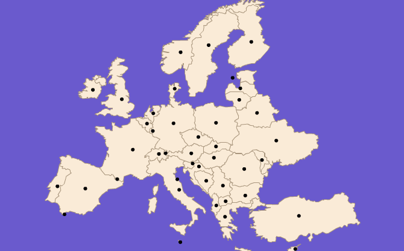

The
matrix property specifies a
Matrix object
that reflects the current map transformation. The identity matrix
applies when the map fits the component.
You can use the matrix property to synchronize a component with a map by listening for
changes to the matrix property.
The following example shows how to construct a map layer
as an instance of UIComponent on
top of the map.
<?xml version="1.0" encoding="utf-8"?>
<mx:Application xmlns:mx="http://www.adobe.com/2006/mxml"
layout="absolute"
xmlns:ilog="http://www.ilog.com/2007/ilog/flex"
applicationComplete="complete(event)">
<mx:Script>
<![CDATA[
import mx.graphics.SolidColor;
import mx.events.PropertyChangeEvent;
import ilog.maps.MapFeature;
import mx.core.UIComponent;
private var _layer:UIComponent;
private function complete(e:Event):void {
_layer = new UIComponent();
map.addChild(_layer);
map.addEventListener(PropertyChangeEvent.PROPERTY_CHANGE, synchronize);
invalidateDisplayList();
}
private function synchronize(e:PropertyChangeEvent):void {
if(e.property == "matrix") {
_layer.transform.matrix = map.matrix;
}
}
protected override function updateDisplayList(unscaledWidth:Number, unscaledHeight:Number):void {
super.updateDisplayList(unscaledWidth, unscaledHeight);
if(_layer == null)
return;
var g:Graphics = _layer.graphics;
g.clear();
g.beginFill(0);
for each (var mf:MapFeature in map.mapFeatures) {
var p:Point = mf.barycenter;
p = map.latLongToCanvas(p);
p = map.drawingCanvas.localToGlobal(p);
p = _layer.globalToLocal(p);
g.drawCircle(p.x, p.y, 3);
}
g.endFill();
}
]]>
</mx:Script>
<ilog:ContinentalEuropeMap allowNavigation="true" id="map" top="10" left="10" bottom="20" right="10" />
</mx:Application>
This example creates a layer that contains a dot on each
country. The positions and sizes of the dots remain synchronized with
the countries on the map when you resize the map.
